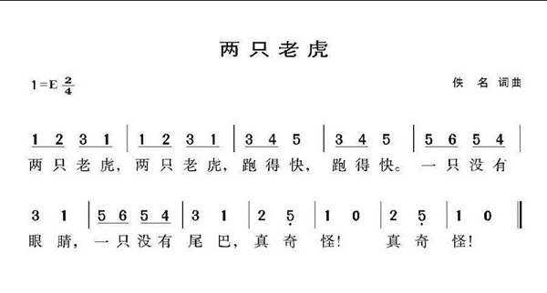
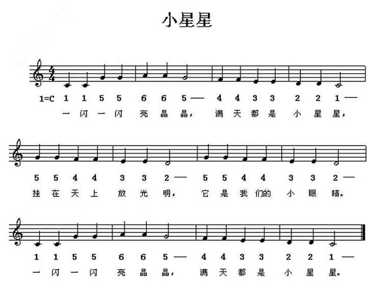
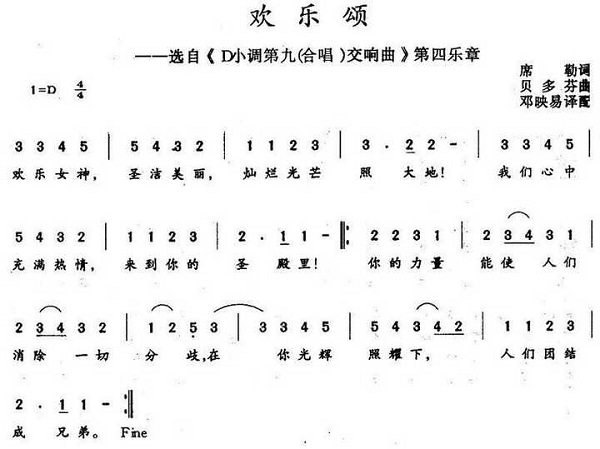
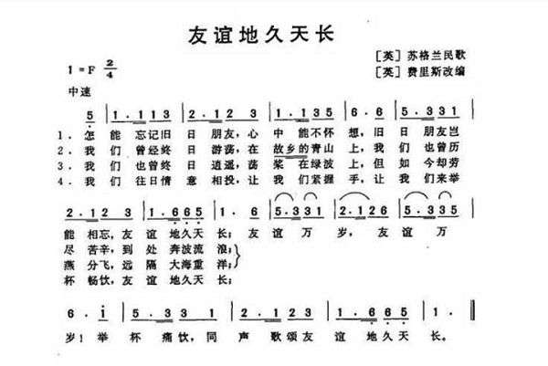
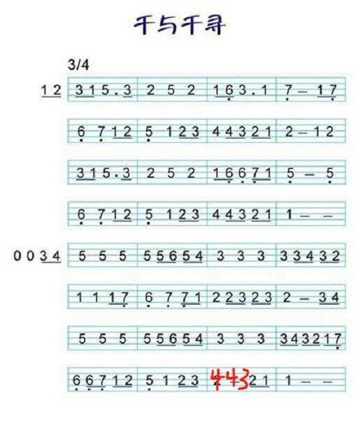
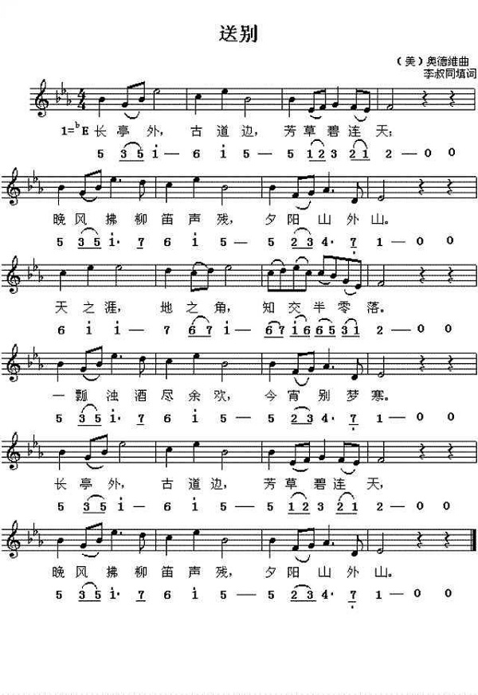
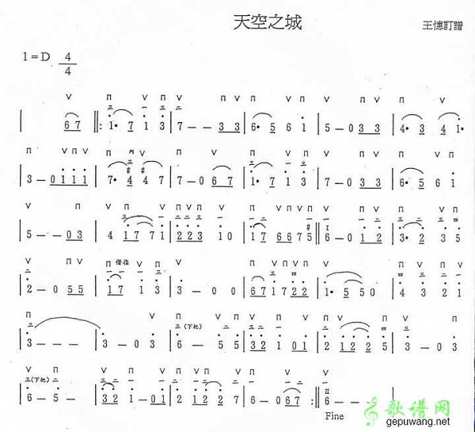
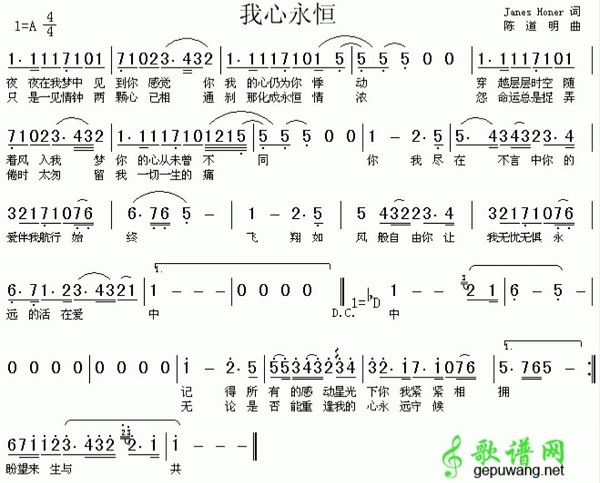

完成基础音阶的练习后，就可以进入曲子练习，但是找什么样的曲子、怎样循序渐进也是练习口琴的一大难点。接下来就看看怎样循序渐进地练习吧！

点评：这是学任何乐器的最最基础的入门曲了吧，口琴自然也不例外，这首曲子基本把中音部的所有音都包括了，唯一一个跨音部的就是最后那个低音5扫。

点评：这首曲子所有的音都在中音部，而且音节与音节之间跨度不大，连贯性很强，很适合中音部音阶的练习。

点评：这首曲子的所有的音也基本都在中音区，唯一一个跨音区的仍然是那个低音5扫，但相对前两首，欢乐颂显得更长一点，掌握起来也相对难一些。
如果上面几首曲子你都已经熟练掌握了，那么恭喜你，口琴的中音部你已经成功入门，万事开头难，只要你踏出了第一步，后面的难关自然也不在话下。
点评：这首虫儿飞主要跨中低音区，且低音区只出现了低音6和7，用来衔接练习再好不过。

点评：这首曲子也算是口琴经典曲目之一了，其主要跨中低两个音区，还出现了一个高音的1，有了上述基础，吹奏起来并不难。

点评:《千与千寻》是口琴考级的经典曲目之一，当能把《千与千寻》熟练地吹好，那么基本上口琴的中低音部都已经入门，如果有兴趣的朋友也可以乘胜追击，挑战一下低音部中稍微难一点的《贝加尔湖畔》，这里就不提供多的简谱了。

点评：中国人一般对于这首《送别》都有种抹不开的情怀，我们这一生都会经历各种送别，送别家人、送别朋友，举一杯浊酒尽余欢，今宵别梦寒。而《送别》这首曲子也是跨越了中低高三个音区，其中高音部分并不多（下划线表示速吹），用来过渡练习是最好不过。

点评：《天空之城》也是口琴最经典曲目之一，它横跨中高两个音区，且高音区占了相当比重，节奏较缓，是练习高音部的绝佳曲目。

点评：这首曲子有很大一部分是在高音区，且后面节奏比较快，也是用来练习口琴高音曲的一个好选择。
上面选择的曲子都是由易到难循序渐进的，只要按照顺序不断练习，必会有很大的收获。最后，如果已经攻克所有音部，就可以自己主动搜索自己喜欢的歌曲的简谱进行练习，口琴入门只是刚刚开始，未来还可以在吹法（如超吹）、种类（如半音阶口琴、十孔布鲁斯口琴）等方面不断探索。
© 2021 自学口琴. All rights reserved | Designed by Julien